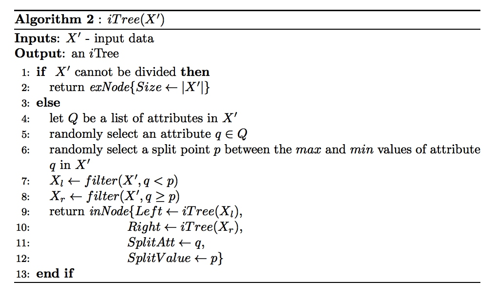
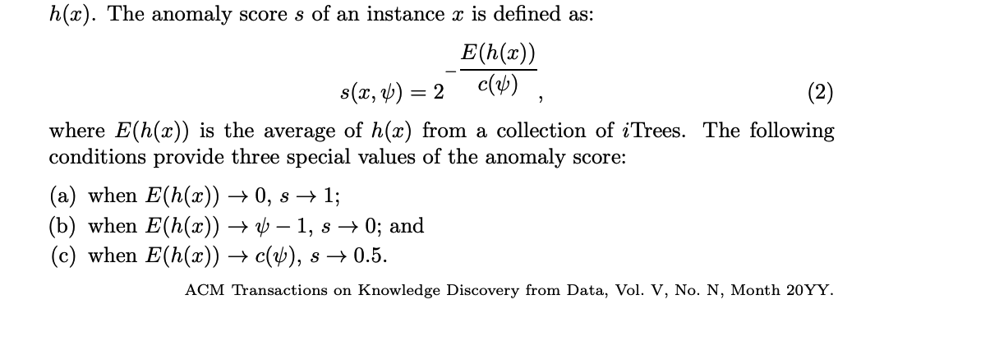

[TOC]
算法原理一句话介绍
算法原理-文档
iForest （Isolation Forest,孤立森林)是一种异常检测算法，它的原理是构造多颗决策树，先通过计算样本点落入决策树的叶子节点的路径长度来确定每棵决策树的检测结果，并对多颗决策树的检测结果进行集成。该算法具有线性时间复杂度和高精准度,并且能有效处理高维和海量数据。
算法原理是从样本数据中随机选取n个观测，用随机森林将这些观测区别开。建树过程中，随机选取一个特征，然后从该特征的最大值和最小值之间随机选择一个值进行拆分。对于一个样本，如果将它区分出来需要经历的特征拆分数量越多，即树深越大，说明越可能是正常值。
原理如下所示

【附】算法原理细节
- 模型训练 孤立森林的训练，就是在构造孤立森林的过程，类似随机森林，“森林”也是由一系列的“树”组成的，这里的“树”叫Isolation tree(iTree)。 iTree和二分查找树结构类似，构造iTree时，先从样本$X$中采样出 $n$ 个样本$ X^{'}$.然后随机挑选一个特征/属性$q \in Q$，遍历样本中该属性的取值，随机挑选一个取值p作为分割点，得到两个子集$X_l$和$X_r$, 然后继续分割，直到满足如下的迭代终止条件：
- iTree的深度达到给定阈值
- $X^{'}$的个数=1
- $X^{'}里面的样本取值一模一样$。 完整构造过程如下图： 
2.预测 预测的基本思路是：把测试数据在每棵iTree走一遍，沿对应的条件分支往下走，直到达到叶子节点，记录这过程中经过的路径长度path length(用$h(x)$表示)，并由此得出异常分数，当分数超过某一阈值，即可判定为异常样本。 具体来说怎么根据$h(x)$来计算异常得分呢？ 论文给出的方法是: 
- 计算归一化因子 $c(n)=2H(n−1)− \frac{2(n−1)}{n}$, 其中$H(i)=ln(i)+ 0.5772156649$(欧拉常数)
- 计算异常得分: $s(x,n)=2^{-\frac{E(h(x))}{c(n)}}$,取值范围为[0,1] 这里$E(h(x))$表示样本点x在多颗itree的平均路径，取值越大，表示该样本越有可能是正常点，得分就越低。 当$E\left( h\left( x\right) \right) \rightarrow n-1 $时，$s\rightarrow 0$; 当$E\left( h\left( x\right) \right) \rightarrow c\left( n\right) $时，$s\rightarrow 0.5$; 当$E\left( h\left( x\right) \right) \rightarrow0 $时，$s\rightarrow 1$; s相对$h(x)$是单调的，根据s的取值我们可以有如下判断： (a)当s很小，x是正常点。 (b)当s接近0.5时。 (c)当s接近1时，x是极端异常点。
参数说明
算法的主要参数如下： n_estimators：随机森林有几棵树，默认是100棵 max_samples：训练每棵树用多少样本，默认取值是min(256, n_samples) contamination：训练数据中异常点的占比，默认取值是0.1；该值用于确认异常值判定的阈值 max_features：每棵树使用的特征树，默认使用所有特征 bootstrap：是否有放回抽样，默认False
阈值： 孤立森林本身可以输出LOF得分，这个得分越高，表示异常程度越大，得分越低表示很正常。 所以在推断的时候，可以把这个参数当成敏感度。
场景可视化
该算法出处的检测

参考资料
[1]https://cs.nju.edu.cn/zhouzh/zhouzh.files/publication/tkdd11.pdf